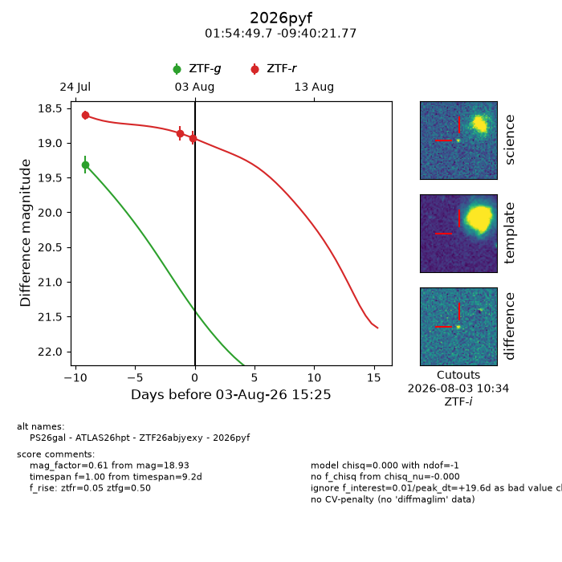
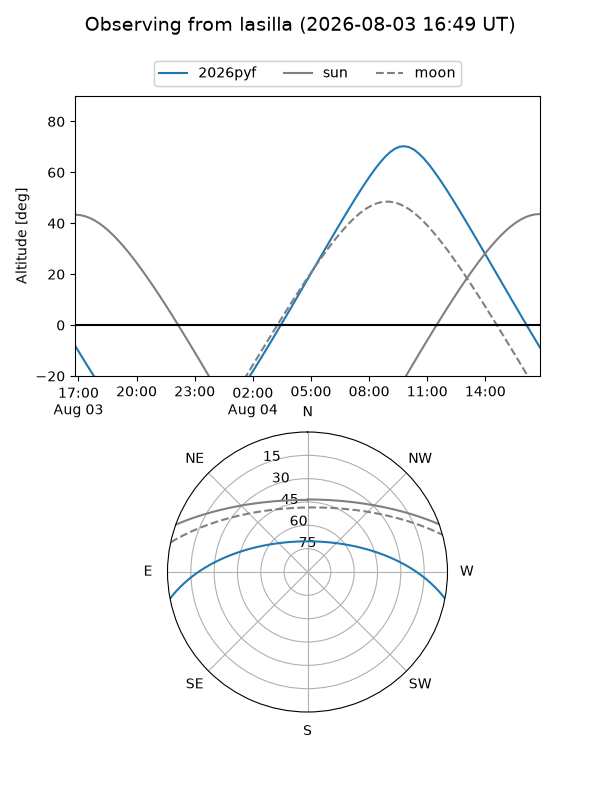
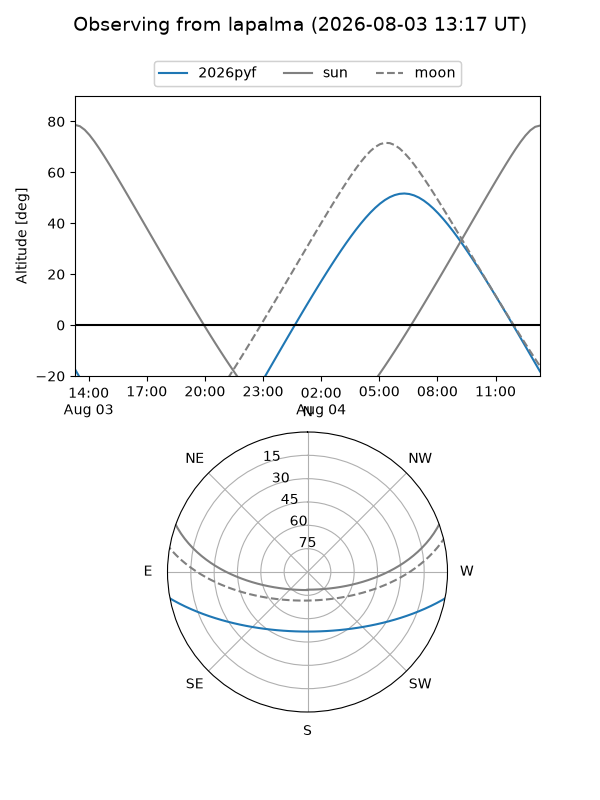
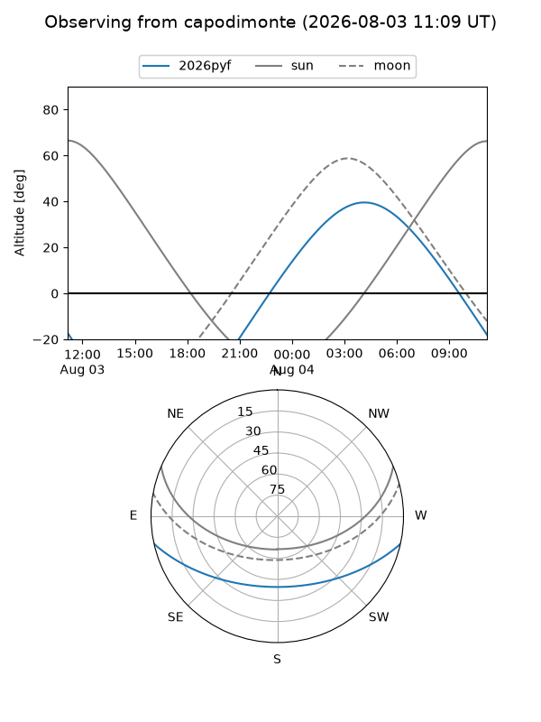
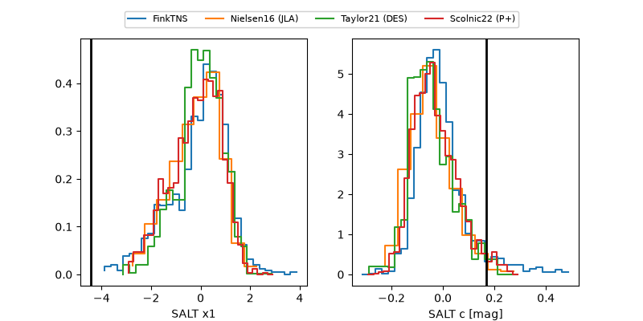

2026pyf
Target 2026pyf at 2026-08-03 15:28
Aliases and brokers:
FINK-ZTF: ztf.fink-portal.org/ZTF26abjyexy
Lasair-ZTF: lasair-ztf.lsst.ac.uk/objects/ZTF26abjyexy
ALeRCE-ZTF: alerce.online/object/ZTF26abjyexy
YSE-PZ: ziggy.ucolick.org/yse/transient_detail/2026pyf
TNS name: wis-tns.org/object/2026pyf
Direct TNS query: direct search
alt names
ZTF26abjyexy (ztf,fink_ztf)
2026pyf (tns,yse)
ATLAS26hpt (atlas)
PS26gal (panstarrs)
Coordinates:
equatorial (ra, dec) = 28.7071,-9.67271
equatorial (HMS+DMS) = 01:54:49.70,-09:40:21.77
galactic (l, b) = (166.5121,-67.01450)
Flags:
TNS type: nan
peak dt: +19.6
Photometry:
last ztfg=19.32, ztfr=18.93
1 ztfg, 3 ztfr detections
Lightcurve

Visibility



Additional plots
